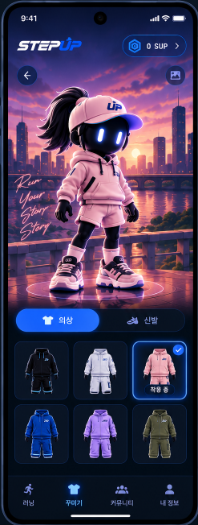
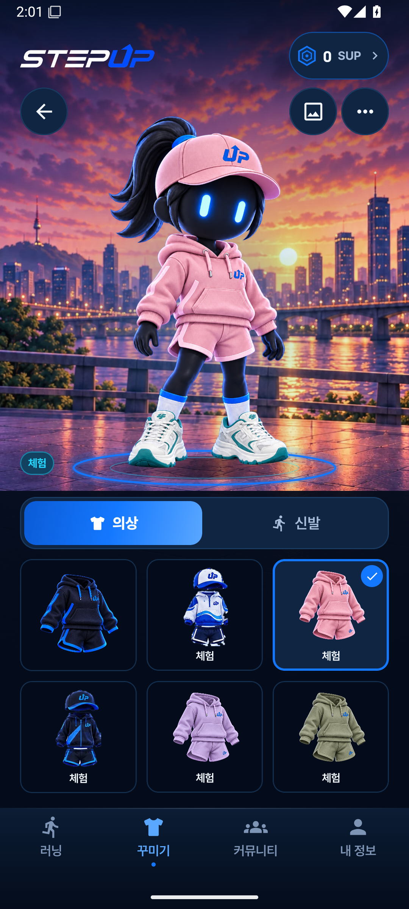
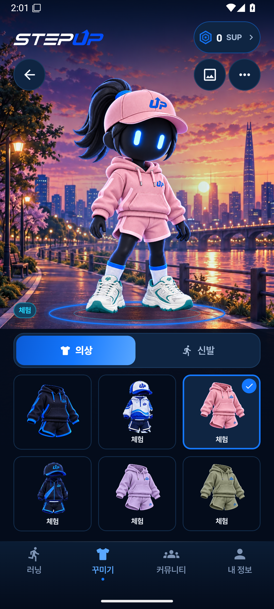
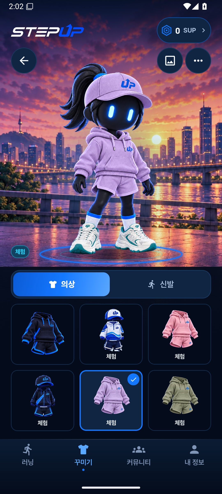
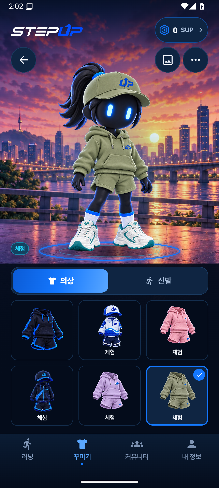
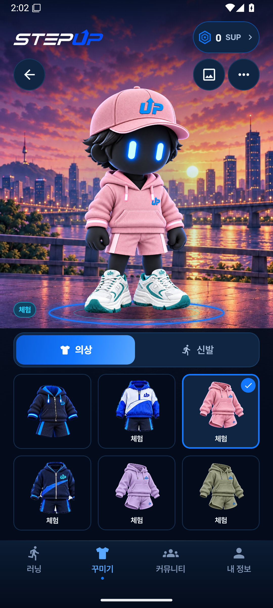
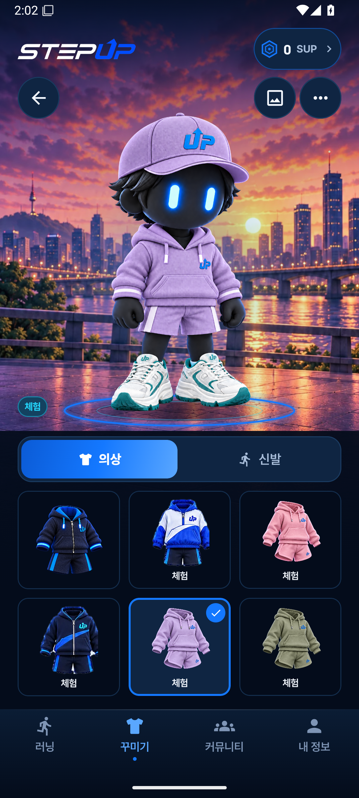
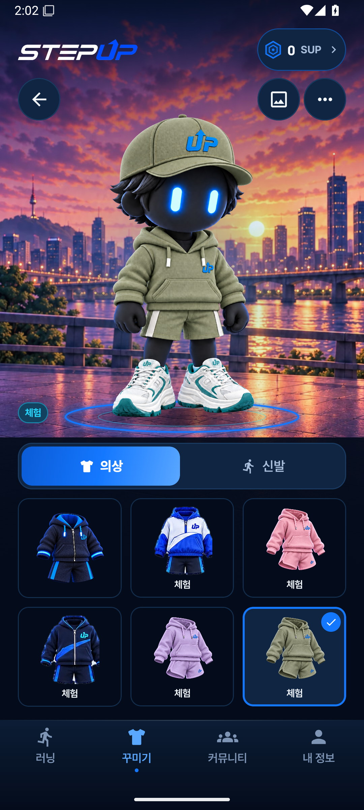

옷장 2차 · 실제 앱 검토
분홍·라벤더·올리브 착장, 남녀 캐릭터와 의상 목록용 이미지 총 9개를 앱에 적용했습니다. 아래 앱 화면은 Android 15에서 촬영한 원본이며 새 의상은 데모 모드의 체험 상태입니다.
사용자 기준 이미지와 적용 결과

사용자 기준 이미지

실제 앱 · LUMI 분홍 / 테라스
LUMI · 세 가지 색상

LUMI · 분홍
LUMI · 라벤더
LUMI · 올리브
RUNO · 세 가지 색상

RUNO · 분홍
RUNO · 라벤더
RUNO · 올리브
배경과 캐릭터는 독립된 이미지입니다. 옷장 교체 목록에는 발 아래 지면이 맞는 테라스·노을 2종을 남겼고, 야경은 물 위에 서 있는 것처럼 보여 제외했습니다. 의상별 달리기·앉기 포즈, 새 신발, 신규 배경 공급과 시간 자동 교체는 후속 범위입니다.
지도는 실제 2D 지도 타일·경로·마커의 제약을 기준으로 후속 디자인을 진행합니다. 옷장 장식 배경 교체와 지도 좌표는 별도로 취급합니다.
분리 자산 보드 · 자산·배경 기준 · 촬영 근거
앱 원본: 44e2367 · Android 14/15 옷장 검증 대상. 전체 앱 검수 완료를 의미하지 않습니다.